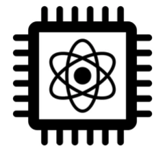

Welcome to my home page!
I am a Neutrino Physicist and Professor of Experimental Particle Physics at the Department of Physics of the University of Liverpool.
I study one of the most extraordinary, weird, mysterious characters in our universe: the Neutrino! I perform precision measurements of neutrino interactions and neutrino oscillations to search for right-handed neutrinos, understand the origin of the neutrino mass, determine the neutrino mass hierarchy, search for CP violation in the leptonic sector, and investigate the origin of matter-antimatter asymmetry in the universe.
More details on my current and past research activities
can be found here.
Currently, I am mainly active on the following projects:
 I am centrally involved in preparations for the physics exploitation of the
Fermilab Short-Baseline Neutrino (SBN) Programme,
in particular in the
SBN Near Detector (SBND).
Currently,
I am the Liverpool PI for SBN and SBND,
I serve as
a member of the SBND Executive Committee,
and SBND Physics co-Coordinator (2017-present).
My research is focussing on exploiting SBND data to characterize
the neutrino beam and neutrino-Argon cross sections and enable new physics searches.
I am centrally involved in preparations for the physics exploitation of the
Fermilab Short-Baseline Neutrino (SBN) Programme,
in particular in the
SBN Near Detector (SBND).
Currently,
I am the Liverpool PI for SBN and SBND,
I serve as
a member of the SBND Executive Committee,
and SBND Physics co-Coordinator (2017-present).
My research is focussing on exploiting SBND data to characterize
the neutrino beam and neutrino-Argon cross sections and enable new physics searches.
 I am co-spokesperson of the international GENIE collaboration,
and one of the main authors of the well-known
GENIE
neutrino event generator, as well as of the corresponding
global analysis of neutrino scattering data informing GENIE tunes.
GENIE performs influential phemomenology research in the boundary between nuclear
and particle physics, provides a bridge between theory and measurement,
and it is a key ingredient in the exploitation effort of many experiments.
I am co-spokesperson of the international GENIE collaboration,
and one of the main authors of the well-known
GENIE
neutrino event generator, as well as of the corresponding
global analysis of neutrino scattering data informing GENIE tunes.
GENIE performs influential phemomenology research in the boundary between nuclear
and particle physics, provides a bridge between theory and measurement,
and it is a key ingredient in the exploitation effort of many experiments.
 I am one of the main authors and coordinator of the
VALOR fitting group,
that develops the VALOR Software Development Kit (SDK) and
takes a lead role in the analysis of data from several neutrino experiments.
VALOR sprung from T2K where
the VALOR group produced over 20 reviewed oscillation physics analyses
and it has contributed to 12 published T2K papers, culminating in the
2020 Nature paper
on T2K neutrino CP violation constraints.
(Details on the prolific research output of the group can be found in the VALOR web page.)
Currently, the group is mostly active on SBN/SBND and JUNO.
I am one of the main authors and coordinator of the
VALOR fitting group,
that develops the VALOR Software Development Kit (SDK) and
takes a lead role in the analysis of data from several neutrino experiments.
VALOR sprung from T2K where
the VALOR group produced over 20 reviewed oscillation physics analyses
and it has contributed to 12 published T2K papers, culminating in the
2020 Nature paper
on T2K neutrino CP violation constraints.
(Details on the prolific research output of the group can be found in the VALOR web page.)
Currently, the group is mostly active on SBN/SBND and JUNO.
Recently, I joined (initially as an observer)
the
Jiangmen Underground Neutrino Observatory (JUNO) in southern China.
I am excited by the prospect of using atmospheric neutrinos
to enhance the overall JUNO sensitivity (in combination with reactor neutrinos),
and help JUNO achieve the first definitive neutrino mass-ordering determination.
I work in the modelling of atmospheric neutrino interactions using
GENIE,
as well as in event reconstruction
and the incorporation of atmospheric event samples in a
VALOR-based
3-flavour oscillation analysis.

Currently, I am entering in the field of Quantum Information Science.
I work with scientists at the
Fermilab Quantum Institute on a project to
use quantum processors for neutrino interaction simulations.